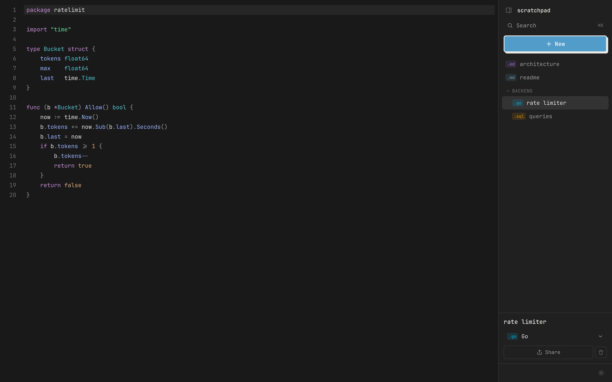
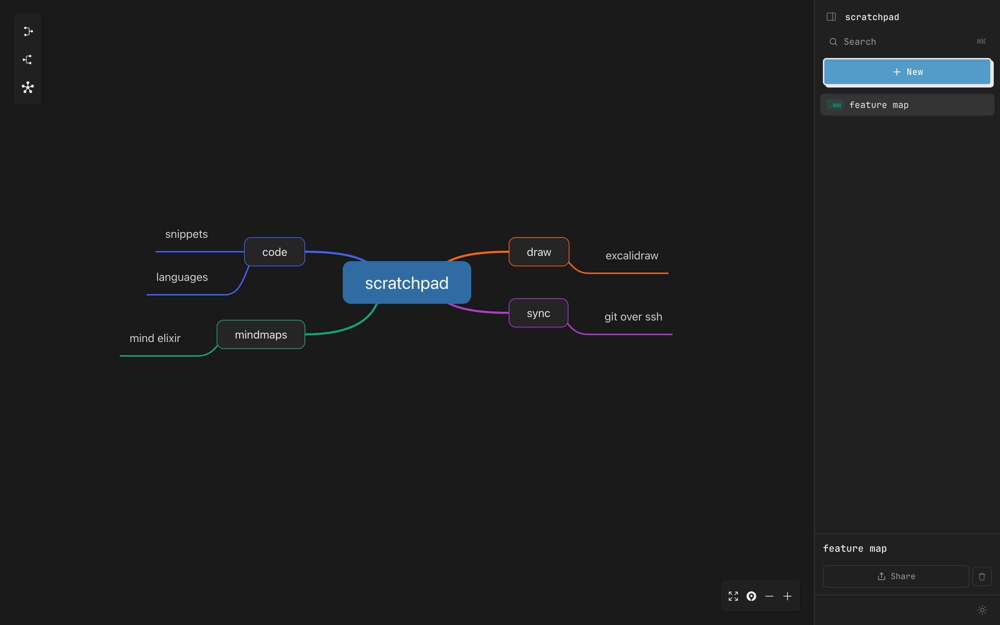
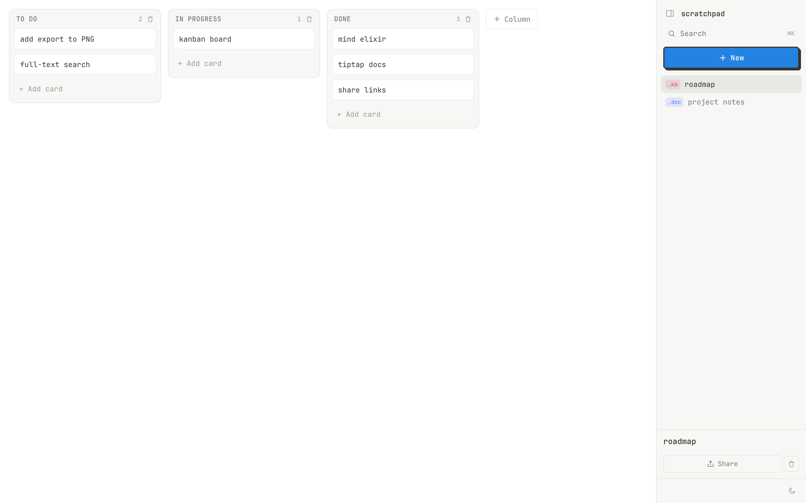
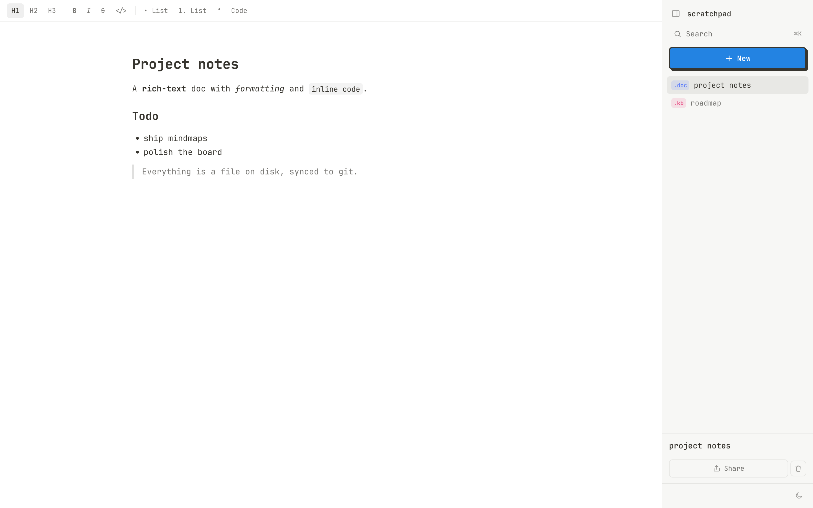
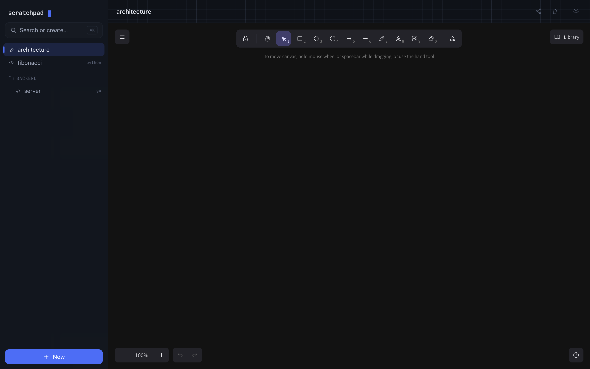

Your own little workspace for
code, diagrams & notes.
One small Go binary you run on your own server. Code snippets, drawings, mindmaps, rich-text docs and kanban boards — all stored as plain files, synced to a private git repo, and shareable with expiring view-only links.

Everything in one place
Five editors
Code (CodeMirror), drawings (Excalidraw), mindmaps (Mind Elixir), docs (Tiptap) and kanban boards.
Files + git
Your data is real files synced to a private repo over SSH or HTTPS. Easy backup and recovery.
Share links
View-only links with optional expiry and auto-generated preview images.
Version history
Every item is git-tracked — browse and restore any past version.
Backlinks
Connect items with [[wiki-links]] and a linked-from panel.
Light & fast
~20–30 MB idle RAM, single static binary, instant boot. No Docker, no DB server.
A workspace, not five apps




Self-host in a minute
git clone https://github.com/phoenix911/scratchpad
cd scratchpad
make all # build the SPA, embed it, produce ./scratchpad
./scratchpad # http://localhost:8080Then put it behind Caddy, nginx, a Cloudflare Tunnel or Tailscale and set a password. See the docs.